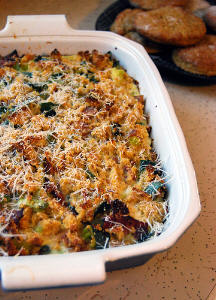
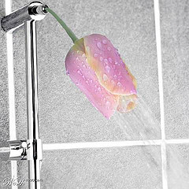

|
 |
|||||||||
Your C-Section Recovery at HomeOne of the first things you should do after coming home is to call the doctor and set up your 6-week follow up appointment. This is crucial because it is when your doctor gives final approval for things like exercising, going on a trip, returning to work, or making love.
A Simple Start is Vital in a Full C-Section RecoveryAs you are beginning to recover, it will important to keep in the back of your mind this little reminder: I've just had major abdominal surgery. I'm sure it won't be a difficult thing to remember (what with that incision across your tummy and all).It may be tempting to jump right into full-active mothering from the moment your suitcase hits the living room floor, but that's probably the worst thing you could do in your recovery. Pushing too hard in the beginning only leads to a longer recovery period. Here are some simple guidelines to use in your c-section recovery at home:
If you are extroverted, more visitors may give you the extra boost you need for a faster c-section recovery. If you are introverted, hole up in your house for a while before seeing visitors. Determine what is best for you, and then communicate that to your husband or a friend to share with others. Don't worry, your newborn will still look like a baby after a few weeks. They can see him then. Although it's important in C-section recovery to rest, make sure you aren't resting too much. Regular walks (every hour) around the house will promote healing and help prevent constipation and blood clots. Balancing SiblingsIf you have older children, line someone up to provide basic careYounger children will generally find your incision fascinating. Show them your new "Ouchie" with instructions not to touch your tummy for a few weeks. Give your other children plenty of hugs and kisses, but resist picking them up. Your maximum weight load happens to be your new infant.
Instead, invite them to cuddle with you on the couch with a book, coloring book, or favorite TV show (theirs not yours!).
Hiring a helper

Curious about this product?
Driving After C-SectionMothers who have undergone a cesarean are encouraged not to drive for 3-6 weeks. You should be able to push on the brakes rapidly without feeling any hesitation due to abdominal pain.Make sure you practice swift braking in the car before actually driving to make sure you can react in an emergency. You should also be 100% free of narcotic pain medication (like Codeine) before attempting to drive a vehicle. You can ride in the car as a passenger for local trips after two weeks (recommended but perhaps not realistic). Wait for 6 weeks before taking longer trips - making sure to take frequent "walking stops" to avoid blood clots. Chores to Avoid After a C-SectionYou should avoid almost any chore that requires you lifting anything heavier than your baby, keeps you on your feet, or requires climbing stairs frequently.

This eliminates laundry, most cleaning, and
some cooking. If you do not have friends or family available to help out, I strongly encourage you to consider hiring
some temporary help.
Besides your baby, the other God-given blessing of a c-section recovery is the required resting time you
can use to bond with her.
{Photo by jslander} A family member or a maid can help with routine chores. Again, do not lift anything over 15 pounds for 6 to 8 weeks, even if the incision seems to be healed. The stairs can be particularly harmful during a c-section recovery. Try to avoid climbing them until a week after delivery. Set up a "station of operation" in the living room near the couch. You should attempt to spend the whole day on the first floor, only going upstairs to sleep at night. Ask friends or your church to provide meals for the first few weeks. When preparing for the birth of my second, I started cooking a month early and stored those meals in the freezer. Thanks to church friends and a freezer, we had meals covered largely for the first two months, which was an enormous relief.
Your husband's signature dish of boxed Mac and Cheese and frozen pizza will get old fairly quickly, so plan ahead! It is always a tremendous relief at 5:00 pm to know supper is already prepared. If people offer help, ask for food! (Subsequently, if a friend has a new baby, offer food!)
When Can You Bathe?For the first 24 to 48 hours you will most likely wash via sponge bath. After that you can begin taking a shower with assistance.

The water should run gently over the incision, not hit it directly and soap should be directly applied.
{Photo by Aizwa Ikcha} It's amazing what a little shower can do to your emotional well being! It will refresh you and give you energy you didn't think you had. When drying off, pat your tummy dry (don't rub). Most doctors agree that you should wait about 2 weeks before having a submerged bath. Because hot tubs are not drained and cleaned after every use, do not use them until a c-section recovery period of 6 weeks. You don't want to risk an infection during these critical healing weeks. Also, if you're still bleeding, you'll contaminate the tub for everyone else. Would you want to relax in the recovering liquids of another woman? I think not. Be courteous to others and considerate of yourself and wait until the incision is completely healed. Hiring Some Temporary HelpI don't live near family, so I completely understand the extra burden of not having an always-available grandparent around to help. If you don't have family or fellowship in a church that can help, hiring a temporary helper may be the solution you need.When looking for some quality help for you and your infant, you'll want to make sure you get some information about their background and credentials (after all, they are coming into your home and helping you care for your baby). Be sure to ask for:
There are two places on the web that will do all of this for you (and even a little more). They are SitterCity Know the limits you should have around your home - and stick to them! If you push yourself too hard your c-section recovery will take twice as long. Get loved ones and friends to help you with the routine chores, and let everything that's not routine wait. These few weeks will fly quickly by. There is plenty of time for the crazy-busy life later. For now, immerse yourself into getting to know the little miracle you suffered so valiantly for.
Return to Your Cesarean Baby Delivery from C-Section Recovery Return to the Home Page
 Stay Connected to the EiR
> |

Have another question about your c-section?

Browse through these other cesarean recovery articles for answers.
 I just subscribed to the site, and I'm very happy I did. I have worked in the medical field for several years and love to have good resources for when things come up...
I just subscribed to the site, and I'm very happy I did. I have worked in the medical field for several years and love to have good resources for when things come up...
~ Crystal S. What a great site and thanks for having it available! ~ Bernadette W. I'm very excited to start receiving the newsletter. I've checked out your site a couple times and I loooovve how it's arranged, your language, and tips - it's great! ~ Emily N. Heather, I can't express how happy I am I discovered your site! ~ Liza T. Thank you Heather, for your wonderful newsletter. There is always something new! ~ Desiree T. I'm a 1st time young mom, 23 and single, so I have found very very helpful...I can't seem to stop myself telling everyone I know about you, some thought you were my mom! ~ Vuyiswa N. Your website is very helpful and I discovered a couple of great online stores. 'Cause I'm not a big reader, it is very nice that I can find the most important information through your website. ~ Tonya G. Thanks Heather! Your Milestone eBook is SO detailed and so correct. My son is doing all or most of the things and many are not mentioned in the usual books/sites. Great job and keep it up! ~ Anwesha C. Thanks so much for creating such an AWESOME website. I really appreciate your sense of humor and real writing style. ~ Andrea Z. My baby refused all bottles until you showed me the MAM bottle. Thank you so much for the recommendation. I wouldn't have known about them if not for your website. ~ Jennifer at Sweet Lilly Confections Thank you ladies! Talk about great motivation to keep writing... 
|
||||||||
|


| |||||||||